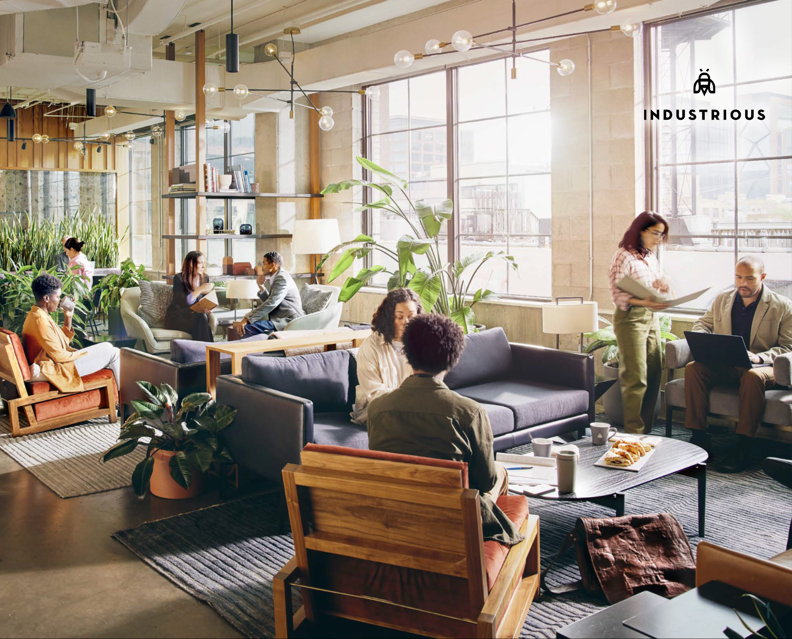

GreenThumb
Redesigning the Volunteer Experience
A service design project exploring how NYC community gardens can better onboard and retain volunteers.

Industrious
Engaging the Unengaged
A workplace experience strategy exploring why coworking members disengage — and how to bring them back.

CleanPaws
Turning Cleanup Into Community
An interactive dog-waste station that uses positive feedback to encourage responsible cleanup in public spaces.

Notes of Hope
Visual Identity for a Community Music Project
Designing a logo and visual identity for a nonprofit streaming performances to thank frontline workers during COVID-19.